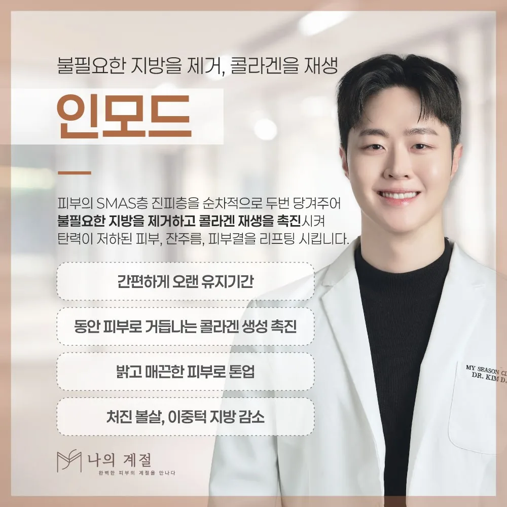
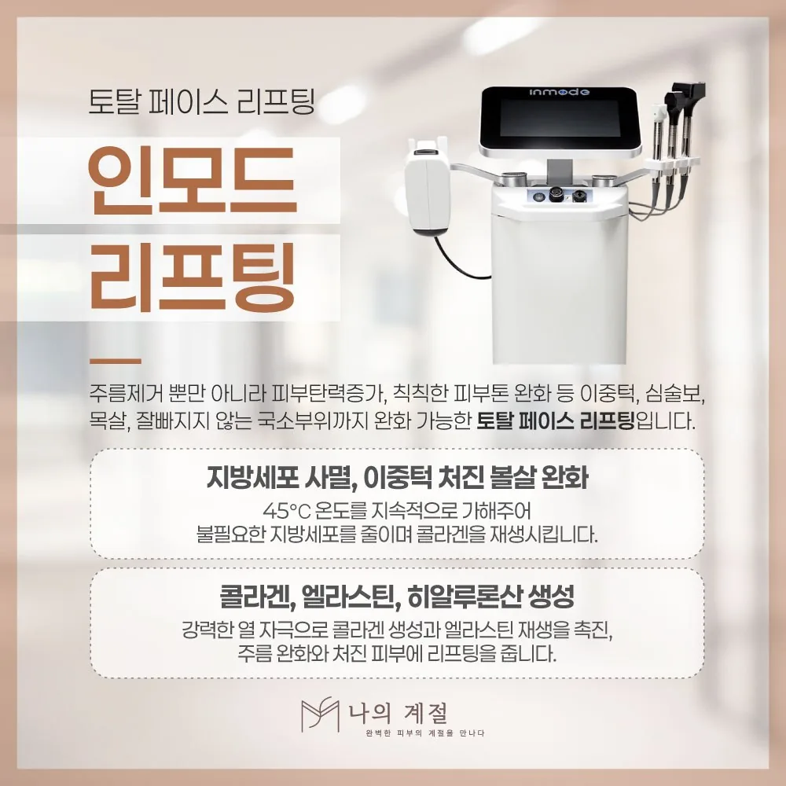

Journal
울산인모드 건강정보
울산인모드 상담 전에 확인할 내용을 다룬 나의계절의원의 글 목록입니다.
-

인모드울산인모드 전 알려야 할 금기 사항과 시술 중 열감 대처
고주파 장비는 금속·전자기기 삽입물, 임신, 시술 부위 염증 등이 적용 제한에 해당할 수 있습니다. 미리 전달할 정보와 시술 중 열감·통증을 알려야 하는 이유, 회복 중 주의사항을 정리했습니다.
더 읽기 → -

인모드울산인모드, 고주파와 초음파 리프팅은 무엇이 다른지
인모드는 고주파(RF) 에너지를 쓰는 장비로 집속 초음파 장비와 작용 방식과 깊이가 다릅니다. 어느 쪽이 더 강한지가 아니라 내 고민이 탄력인지 지방인지에 따라 선택하는 기준을 정리했습니다.
더 읽기 →